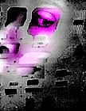
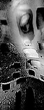
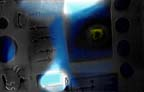

Phiber Optik and the Masters of Deception
-Loretta Lange
- Antique television cabinet
- Metal welding cabinet
- 5, 13" Samsung televisions
- 1, Sony Watchman
- European motorcycle
- Chassis, 2 exhaust pipes
- Speaker ® 2 Pioneer laser disk players
- 2 original Paik laser disks
The above list constitutes the components of Nam June Paik's work entitled,
Phiber Optik. The sculptural work stands about seven feet high and
was is one of thirty works in his monumental installation at the San Jose
Museum of Art (Spring 96) which he calls Cybertown. Paik is an artist attempting
to develop a language that creates a bridge from our object-oriented world
to an illusory and transitory electronic domain which is becoming increasingly
more prevalent in our global culture.
The first impression of Phiber Optik is one of a huge, dark robot-like
motorcycle being that is not rider and machine, but a unified entity. Until
one looks beyond the surface to the intent, Phiber Optik almost comes across
as humorous. Why did Paik choose to create a dark image illuminated only
by the flickering digital imagery of television screens? "Dark"
is a loaded word. It summons visions of stealth and furtiveness, as well
as the mystical, the enigmatic, the abstract, the secret, the hidden, the
surreptitious, the unauthorized, the illegal, and the prohibited.

The "life-force" of this entity emanates in the form of electronic
imagery flowing from the six television screens which constitute it's "body."
The image of this electronic rider is at once alarming and enigmatic. It's
size alone creates a presence not easily ignored. Yet, the patchwork blending
of motorcycle parts, antique cabinet, and electronic equipment, emphasized
by the collage of motor-highway bumperstickers, effects a makeshift, somewhat
precarious feeling of instability, a feeling that at any moment the whole
structure could fall apart, disassembling into a heap of junk-yard motorcycle
parts, dead electronic circuits, and vacant television screens.
Conceptually, this work could be compared with Ernest Trova's sculpture
Falling Man (1966). Although the visual characteristics are dissimilar,
Trova and Paik both address issues of technology, and incorporate man and
machine as a hybrid being. Trova's work was done before computers and technology
became so prosaic in our culture, and the Disney-esque idealism of that
era shows in the minimalist, smooth, shining, and polished surfaces. Paik's
Phiber Optik, on the other hand, is shaped by a perhaps more realistic,
retrospective view of technology. Today, computers only a few years old
are junked, considered out of date and unusable. Paik constructs new forms
out of the cast-offs of technology, forms that are not beautiful, that do
not predict a perfect future through technology, but forms that challenge
that utopian ideal, forms that say, "This is the way things are."
Who is Phiber Optik?
The title, Phiber Optik, is very important to understanding this
piece. Paik's work is an attempt to objectify a unique immaterial culture
developed in an electronic environment on the Internet. Phiber Optik
is an ominous vision, a stationary motorcycle rider alive with digital activity,
a visual representation of the attitude and antics of one of the first teenage
on-line hackers, Mark Abene. The term "phiber optik" is derived
from fiber optics, a branch of physics that deals with "thin transparent
fibers of glass or plastic that are enclosed by material of a lower index
of refraction and that transmit light throughout their length by internal
reflections."(1) These fibers are flexible
and can be bent around corners to conduct light and images, and are used
in information and communications technologies.

"Phiber Optik" was Mark's cyberspace "handle," his electronic
on-line identity. This persona existed in a realm accessed by computers
and modems, a realm that consists of information deployed by switches, telephone
lines, cables, and electronic circuits. Coupled with the imagination of
the human mind this combination has created neoteric virtual communities.
Mark was a pioneer in one of the first of these on-line "brotherhoods,"
one of the first computer hackers that "broke the code" and entered
a world where he gained respect as a hero in a community of like-minded,
intelligent teenagers riding the information superhighway for a thrill.
As Phiber Optik, Mark was no longer the skinny teenager "thin and pale
as the underside of an index finger..(with)...otter-sleek black hair, meticulously
clipped and combed." (2) On-line, he
became legendary, a member of the infamous Legion of Doom, a gang of teenage
computer hackers obsessed with breaking and entering -- cracking the security
of the phone company's computer system.
Paik's Phiber Optik is this image of Mark Abene's alter ego. Phiber
Optik came alive on-line. Logins and passwords, "philes," and
codes were the language in his world. It was a language his parents didn't
understand. It was a language he spoke to his peers, others like him escaping
the dreary landscape and physical reality of their lives in the New York
tenements. "The LOD members all fancied themselves specialists in some
dark art," (3) sharing their expertise
in a nascent technology.
On the Digital Highway
The work by Paik describes Phiber Optik, an entity that Mark created in
an intangible world, but one that Paik portrays in the material world in
simple, understandable terms. He chose to use a cultural icon to which the
general public can relate. Man and machine are unified, connected, linked
together, identified as one being. Our society connects power and sex with
the machine -- what we drive is an expression of who we are. The motorcycle
represents the anti-social "wild one." Paik creates his electronic
rebel by using familiar and recognizable elements -- the motorcycle, the
robot, television screens, digital imagery, and the ever present bumper
sticker. By so doing, Paik forces viewers to accept the "reality"
of this transitory entity, who for a period of time was leader of the hacker
pack. Instead of the speed of the wind and the rumble of the motorcycle
engine, one is confronted with a fixed and static form emitting flickering
digital imagery. The picture of Mark comes to mind, sitting virtually motionless
at his computer late into the night, the VDT screen casting a greenish light
in his face, as he remains entranced by the enticing electronic frontier
before him, exploring without any particular goal, captivated by his discovery
of the new commodity of digital information and the challenge of secretly
outsmarting the system.
 Mark no longer rides the digital highways as Phiber Optik; the wild
one was put behind bars. Yet a new generation follows in his footsteps,
and what Paik has captured in his work, Phiber Optik, is the essence
of "alienated adolesence" (4) in
a wired world. Paik's statement is a comment on our culture. Here is a trend
where teenagers go on-line and form gangs, rather than joining street gangs.
To Mark's parents, his seemingly innocent computer activities kept him out
of trouble, and they were shocked when Mark was arrested and went to jail.
Mark opted for staying up all night breaking and entering electronically
instead of studying -- school bored him. It is now the nationwide intent
to get every school on-line. How will that affect the Marks of the future?
When something becomes commonplace, it is no longer a challenge, and teenagers
so love a challenge. They have an innate need to prove themselves, to be
important and respected as an individual within a community. This is what
Mark Abene found as Phiber Optik. Obviously he had not found it as Mark
Abene the skinny teenager. If computers had been available to him in school,
would he have found a different outlet, a place of respect within his school,
and with his classmates?
A more current look at the new generation of computer enthusiasts, indicates
that businesses are cultivating and redirecting this avid teenage fixation.
There are now computers in schools that allow learning the language of computers
at an early age. Like Mark Abene, many are self-taught, and their efforts
are repaid not with jail, but by becoming mainstreamed into the part-time
workforce. Companies need them because of the massive explosion on the Internet:
"This is a new medium, and these young people are the ones who really
understand this medium. It's a generational thing." (5)
Optimism and the Dark Side
Among those who work with computers everyday, there are the optimists. Nicholas
Negraponte in his recent book Being Digital admittedly is an optimist,
although he recognizes the "dark side" of the digitalization of
information, which is where Mark Abene found himself: "intellectual-property
abuse..., invasion of privacy, digital vandalism, software piracy, and data
thievery."(6)
(Negroponte predicts an eventual digital triumph through characteristics
inherent to digitilization: "decentralizing, globalizing, harmonizing,
and empowering."(7) He also says, "Like
a force of nature, the digital age cannot be denied or stopped." (8)
He sees the computer, coincidental with appropriate modifications in teaching
methodologies, helping the young to use both right brain and left brain
in activities simultaneously -- such as using a computer language to create
an image). He states:
Computer hackers young and old are an excellent example. Their programs
are like surrealist paintings, which have both aesthetic qualities and technical
excellence. Their work is discussed both in terms of style and content,
meaning and performance. The behavior of their computer programs has a new
kind of aesthetic. These hackers are the forerunners of the new "e-xpresionists."
(9)
Hybrid Digital Art
Does Paik see Mark Abene as an artist? Very possibly. Negroponte believes
that artists have the "opportunity" to assist in the mediation
of digital change -- they can provide the "hook." Is this what
Paik's prodigious installation, Cybertown, accomplishes? Negroponte
says that "the digital superhighway will turn finished and unalterable
art into a thing of the past...," and that "being digital allows
the process, not just the product, to be conveyed."(10)
Perhaps, Paik is taking a step in that direction at least with his digital
imagery, but his work is still very much the product. Our culture remains
in the mindset of the preciousness and ownership of the material object.
That's a difficult mindset to break.
In the future, as each generation becomes more digital, through alterations
in lifestyle and changes in cultural values, we may see Negroponte's prediction
come true. Until that time, we will no doubt see increasingly more hybrid
digital art, the fusion of product and process which we see in Phiber
Optik.